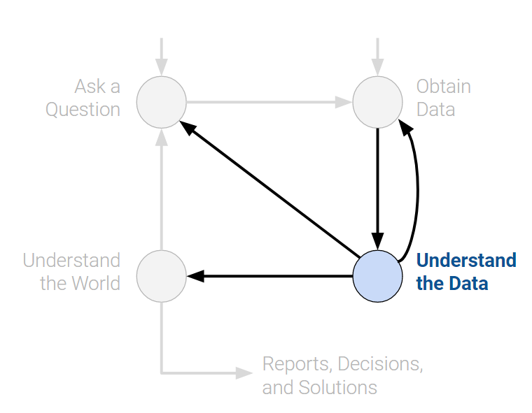
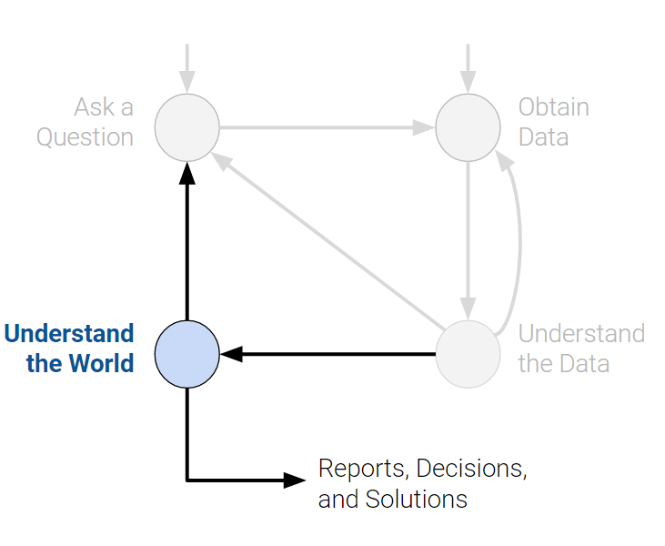

Introduction
Data science is an interdisciplinary field with a variety of applications. The field is rapidly evolving; many of the key technical underpinnings in modern-day data science have been popularized during the early 21st century.
A true mastery of data science requires a deep theoretical understanding and strong grasp of domain expertise. This course will help you build on the former – specifically, the foundation of your technical knowledge. To do so, we’ve organized concepts in Data 100 around the data science lifecycle: an iterative process that encompasses the various statistical and computational building blocks of data science.
Data Science Lifecycle
The data science lifecycle is a high-level overview of the data science workflow. It’s a cycle of stages that a data scientist should explore as they conduct a thorough analysis of a data-driven problem.
There are many variations of the key ideas present in the data science lifecycle. In Data 100, we visualize the stages of the lifecycle using a flow diagram. Notice how there are two entry points.

Ask a Question
Whether by curiosity or necessity, data scientists will constantly ask questions. For example, in the business world, data scientists may be interested in predicting the profit generated by a certain investment. In the field of medicine, they may ask whether some patients are more likely than others to benefit from a treatment.
Posing questions is one of the primary ways the data science lifecycle begins. It helps to fully define the question. Here are some things you should ask yourself before framing a question.
- What do we want to know?
- A question that is too ambiguous may lead to confusion.
- What problems are we trying to solve?
- The goal of asking a question should be clear in order to justify your efforts to stakeholders.
- What are the hypotheses we want to test?
- This gives a clear perspective from which to analyze final results.
- What are the metrics for our success?
- This gives a clear point to know when to finish the project.

Obtain Data
The second entry point to the lifecycle is by obtaining data. A careful analysis of any problem requires the use of data. Data may be readily available to us, or we may have to embark on a process to collect it. When doing so, its crucial to ask the following:
- What data do we have and what data do we need?
- Define the units of the data (people, cities, points in time, etc.) and what features to measure.
- How will we sample more data?
- Scrape the web, collect manually, etc.
- Is our data representative of the population we want to study?
- If our data is not representative of our population of interest, then we can come to incorrect conclusions.
Key procedures: data acquisition, data cleaning

Understand the Data
Raw data itself is not inherently useful. It’s impossible to discern all the patterns and relationships between variables without carefully investigating them. Therefore, translating pure data to actionable insights is a key job of a data scientist. For example, we may choose to ask:
- How is our data organized and what does it contain?
- Knowing what the data says about the world helps us better understand the world.
- Do we have relevant data?
- If the data we have collected is not useful to the question at hand, then we must collected more data.
- What are the biases, anomalies, or other issues with the data?
- These can lead to many false conclusions if ignored, so data scientists must always be aware of these issues.
- How do we transform the data to enable effective analysis?
- Data is not always easy to interpret at first glance, so a data scientist should reveal these hidden insights.
Key procedures: exploratory data analysis, data visualization.

Understand the World
After observing the patterns in our data, we can begin answering our question. This may require that we predict a quantity (machine learning), or measure the effect of some treatment (inference).
From here, we may choose to report our results, or possibly conduct more analysis. We may not be satisfied by our findings, or our initial exploration may have brought up new questions that require new data.
- What does the data say about the world?
- Given our models, the data will lead us to certain conclusions about the real world.
- Given our models, the data will lead us to certain conclusions about the real world.
- Does it answer our questions or accurately solve the problem?
- If our model and data can not accomplish our goals, then we must reform our question, model, or both.
- If our model and data can not accomplish our goals, then we must reform our question, model, or both.
- How robust are our conclusions and can we trust the predictions?
- Inaccurate models can lead to untrue conclusions.
Key procedures: model creation, prediction, inference.

Conclusion
The data science lifecycle is meant to be a set of general guidelines rather than a hard list of requirements. In our journey exploring the lifecycle, we’ll cover both the underlying theory and technologies used in data science. By the end of the course, we hope that you start to see yourself as a data scientist.
With that, let’s begin by introducing one of the most important tools in exploratory data analysis: pandas.